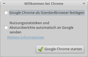

Installation
Dieser Artikel wurde für die folgenden Ubuntu-Versionen getestet:
Ubuntu 16.04 Xenial Xerus
Ubuntu 14.04 Trusty Tahr
Zum Verständnis dieses Artikels sind folgende Seiten hilfreich:
Es stehen mehrere Wege zur Verfügung, Chromium zu installieren. Eine stabile Version von Chromium ist direkt in den offiziellen Paketquellen zu finden. Die Installation aus den offiziellen Paketquellen empfiehlt sich für alle Ein- und Umsteiger. Es existieren auch vom Chromium-Team zur Verfügung gestellte DEB-Pakete - allerdings von Google Chrome. Obwohl Neuerungen zuerst in Chromium zu finden sind und erst danach in Google Chrome eingepflegt werden, bedeutet das nicht zwangsläufig, dass Chromium aus den offiziellen Paketquellen aktueller als Google Chrome ist.
Chromium¶
Chromium kann direkt aus den offiziellen Paketquellen installiert [1] werden:
chromium-browser (universe)
chromium-browser-l10n (universe, deutsche Lokalisierung)
chromium-codecs-ffmpeg (universe, Multimedia-Codecs)
 mit apturl
mit apturl
Paketliste zum Kopieren:
sudo apt-get install chromium-browser chromium-browser-l10n chromium-codecs-ffmpeg
sudo aptitude install chromium-browser chromium-browser-l10n chromium-codecs-ffmpeg
Das folgende Paket wird normalerweise nicht benötigt, kann aber bei manchen Webseiten nützlich sein:
chromium-codecs-ffmpeg-extra (universe, optional, installiert unfreie Multimedia-Codecs, die mit Google Chrome ausgeliefert werden, darunter AAC/AC3/MPEG-4 Audio/H264/QuickTime/MP3)
mit apturl
Paketliste zum Kopieren:
sudo apt-get install chromium-codecs-ffmpeg-extra
sudo aptitude install chromium-codecs-ffmpeg-extra
Google Chrome¶
Hinweis:
Seit März 2016 steht Google Chrome nur noch für 64-bit-Rechner zur Verfügung.
Das Chromium-Entwicklerteam stellt Google Chrome (nicht Chromium!) über die Projektseite als DEB-Paket zur Verfügung. Dieses Paket ist allerdings keine komplett freie Software, da es eine eigene Nutzungslizenz verwendet (Terms of service  ). Inhalt der Lizenz sind Vereinbarungen, die ein Nutzer ausdrücklich lesen und akzeptieren muss, bevor er die Software herunterladen und verwenden kann. Legt man Wert auf die Verwendung von freier Software im eigenen System, sollte Chromium bevorzugt werden (siehe oben).
). Inhalt der Lizenz sind Vereinbarungen, die ein Nutzer ausdrücklich lesen und akzeptieren muss, bevor er die Software herunterladen und verwenden kann. Legt man Wert auf die Verwendung von freier Software im eigenen System, sollte Chromium bevorzugt werden (siehe oben).
Zur Installation geht man wie in der Dokumentation  beschrieben vor: über die Google Chrome-Seite
beschrieben vor: über die Google Chrome-Seite  wird ein Fremdpaket heruntergeladen und manuell installiert [2].
wird ein Fremdpaket heruntergeladen und manuell installiert [2].
Hinweis!
Fremdpakete können das System gefährden.

Installiert man das Paket, ist es wichtig zu wissen, dass ein neuer Paketquellen-Eintrag ("Repository") hinzugefügt wird und Google Chrome so automatisch mit Updates versorgt wird. Möchte man dies unterbinden, hilft – vor der Installation – das Anlegen der Datei /etc/default/google-chrome mit folgendem Befehl [3]:
sudo touch /etc/default/google-chrome
Beim ersten Programmstart kann man entscheiden, ob Google Chrome der Standard-Webbrowser sein soll und ob man Nutzungsstatistiken sowie Absturzberichte automatisch an Google übermitteln möchte.
- Erstellt mit Inyoka
-
 2004 – 2017 ubuntuusers.de • Einige Rechte vorbehalten
2004 – 2017 ubuntuusers.de • Einige Rechte vorbehalten
Lizenz • Kontakt • Datenschutz • Impressum • Serverstatus -
Serverhousing gespendet von